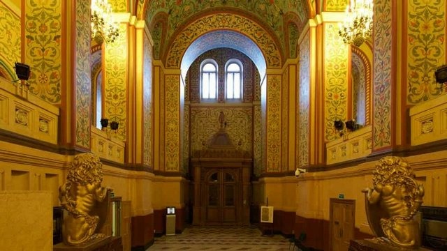
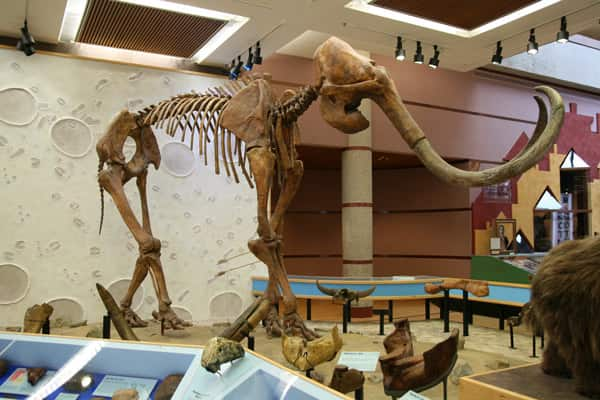
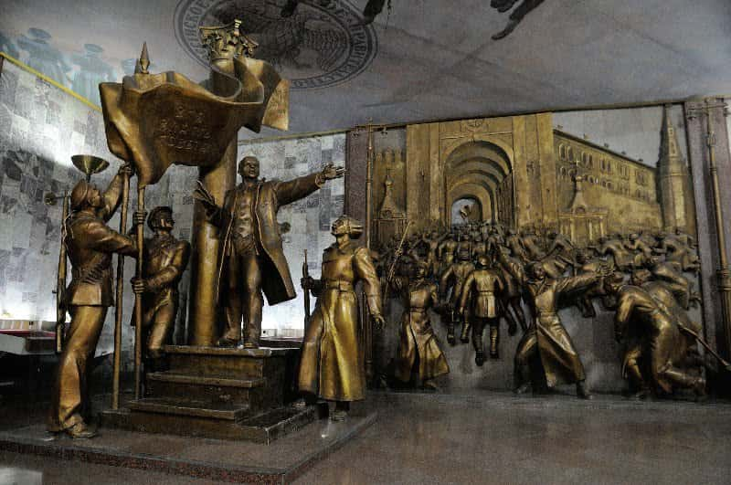

متحف الدولة التاريخي

متحف الدولة التاريخي موسكو State Historical Museum هو المبنى الذي يقع على يمينك عند دخولك الميدان الاحمر من خلال بوابة القيامة، افتتح هذا المتحف في عام 1894 بمناسبة تتويج الكسندر الثالث، وكان نتاج لمشروع مدته 20 عاما لتعزيز مختلف المجموعات الأثرية والأنثروبولوجية في متحف واحد، والذي قيل أنه يحكي قصة تاريخ روسيا بأكملها وفقا لأحداث منهجية علمية
افضل الأنشطة في متحف الدولة التاريخي موسكو
التجول بالمتحف والحصول على فرصة مشاهدة واحدة من أبرز معالم السياحة في موسكو التي بنيت وفق العمارة في العصور الوسطى الروسية، وهو فن العمارة القوطية الذي يتميز بروعة تصميمه وتناسق ألوانه المُدهش، كما أن المتحف يمتلك مجموعة من أفضل نقوش الجدران ضمن المباني الموجودة بالساحة الحمراء

زيارة القسم الخاص بروسيا ماقبل التاريخ حيث يعرض مجموعة نادرة كبيرة من القطع الأثرية والأحافير وأيضًا الهياكل العظمية تعود لآلاف السنيين قبل التاريخ الروسي

مُشاهدة المُقتنيات المعروضة داخل المتحف والتي تُلخص تاريخ روسيا القديم والحديث بالكامل، بالإضافة إلى مُشاهدة مُقتنيات أبرز الحُكام الذين حكموا روسيا على مدار التاريخ في مكان واحد داخل مبنى المتحف بطوابقه

يجب أن لا تنسى احضار كاميرا مناسبة لالتقاط مجموعة من الصور التذكارية، ستحبون مشاركتها مع أصدقائكم بعد عودتكم والاحتفاظ بها من زيارتكم لأهم معالم السياحة في روسيا موسكو وأكثرها زيارة المتحف التاريخي للدولة